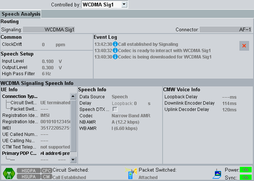

The "Speech Analysis" tab is available for scenarios involving a speech codec.
For stereo scenarios, the settings of the two audio software instances are coupled. You can use instance 1 and ignore instance 2.

"Controlled by" selects the coupled master application. This setting is also available in the audio configuration dialog box, see "Controlled by".
This area displays the coupled master application and the used connector.
For configuration of the settings displayed in this area, see "Common Settings".
For configuration of the settings displayed in this area, see "Speech Analysis Settings".
This area reports events and errors.
Each entry consists of a timestamp, an icon indicating the category of the event and a short text describing the event.
Meaning of the category icons:  = information, warning and error
= information, warning and error
The  button clears the event log.
button clears the event log.
The lower half of the tab displays information provided by the coupled master application. Which information is displayed, depends on the selected application.
The information is also available in the GUI of the master application and is described in the corresponding documentation.